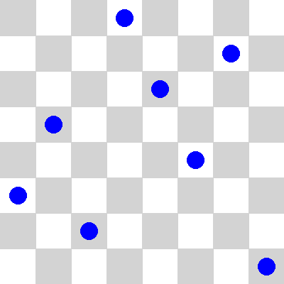
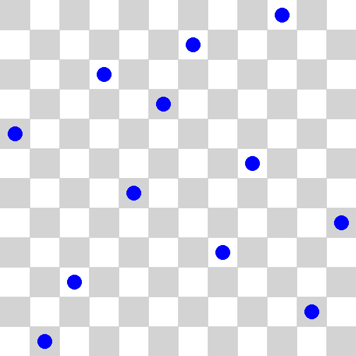

Solving the N-Queens Problem using Constraint Programming#
Introduction#
The N-Queens Problem stands as one of the classic challenges in the realm of combinatorial optimization and constraint satisfaction. Originating from the venerable game of chess, this problem poses the task of placing N queens on an \(N \times N\) chessboard in such a manner that no two queens threaten each other. In this paper, we apply a constraint programming approach, which was discussed in a previous paper.
Constraint Programming Review#
Constraint Programming (CP) is a subset of discrete optimization that focuses on solving combinatorial problems by modeling them as a set of constraints. These constraints are used to define the feasible region of the problem, which is then searched for a solution. The CP approach is particularly well-suited for problems that can be expressed in terms of logical constraints, such as the N-Queens Problem.
Problem Formulation#
Problem Statement: Given an \(N \times N\) chessboard, place \(N\) queens on the board such that no two queens threaten each other. In chess, a queen can attack any piece horizontally, vertically, or diagonally.
Variables:
\(N\) variables representing the column positions of the queens. Let \(Q_i\) represent the column position of the queen in row \(i\).
Domains:
Each variable \(Q_i\) can take on values from \(1\) to \(N\), representing the column positions where queens can be placed.
Constraints:
No Two Queens in the Same Column or Row:
\(\sum_{i=1}^{N} \sum_{j=i+1}^{N} (Q_i \neq Q_j)\)
Ensures that no two queens occupy the same column.
No Two Queens in the Same Diagonal:
\(\sum_{i=1}^{N} \sum_{j=i+1}^{N} (|Q_i - Q_j| \neq |i - j|)\)
\(\sum_{i=1}^{N} \sum_{j=i+1}^{N} (|Q_i + Q_j| \neq |i + j|)\)
Ensures that no two queens occupy the down-right and up-right diagonals.
Objective Function (Optional):
For this problem, the objective function is not required. The goal is to find a valid placement of queens on the board that satisfies all the constraints. However, if we modify the problem to include an objective function, we can, for example, minimize the number of moves required to place all queens on the board.
Implementation#
We will use the ortools library to solve the N-Queens Problem using Constraint Programming. The ortools library has two CP solvers: the CP-SAT solver and the Original CP solver.
CP-SAT Solver: This solver uses SAT (Satisfiability) techniques to solve the CP model. It works by converting the CP model into a Boolean satisfiability problem and then using a SAT solver to find a solution. SAT is a method for solving discrete optimization problems that involve converting the problem into a Boolean formula and then finding a satisfying assignment for the variables.
Original CP Solver: This solver uses a traditional CP approach to solve the CP model. It works by searching for a solution using constraint propagation and backtracking.
from ortools.sat.python import cp_model
import numpy as np
from PIL import Image, ImageDraw
The solve(N) function takes the size of the chessboard as input and returns a list of column positions for each queen. Here is a breakdown of the function:
Create the CP model: Create a CP model using the CP solver.
Define the variables: Create a list of variables representing the column positions of the queens. The array of variables will look like this:
queens = ['queen_1', 'queen_2', ..., 'queen_N']Define the constraints: Add the constraints to the model to ensure that no two queens threaten each other. The code is very similar to the mathematical formulation of the constraints.
Create the solver: Create the solver and solve the model.
Extract the solution: If a solution is found, extract the column positions of the queens and return them as a list.
def solve(N):
model = cp_model.CpModel()
queens = [model.NewIntVar(1, N, 'queens_%i' % i) for i in range(N)]
# All queens in different columns and rows
for i in range(N):
for j in range(i):
model.Add(queens[i] != queens[j])
# No two queens in the same diagonal; down-right and up-right
for i in range(N):
for j in range(i):
model.Add(queens[i] != queens[j] + (i - j))
model.Add(queens[i] != queens[j] - (i - j))
solver = cp_model.CpSolver()
status = solver.Solve(model)
if status == cp_model.OPTIMAL:
return [solver.Value(queens[i]) for i in range(N)]
else:
return None
The visualize(solution, N) function takes the solution and the size of the chessboard as input and visualizes the placement of queens on the board. It uses the PIL library to draw the chessboard and the queens.
def visualize(solution, N):
square_size = 50
board_size = N * square_size
image = Image.new("RGB", (board_size, board_size), "white")
draw = ImageDraw.Draw(image)
# Draw chessboard squares
for i in range(N):
for j in range(N):
x0 = j * square_size
y0 = i * square_size
x1 = x0 + square_size
y1 = y0 + square_size
if (i + j) % 2 == 0:
draw.rectangle([x0, y0, x1, y1], fill="lightgray")
# Draw queens, blue circles
for i in range(N):
x = i * square_size + square_size // 2
y = solution[i] * square_size - square_size // 2
draw.ellipse([x - square_size // 4, y - square_size // 4, x + square_size // 4, y + square_size // 4], fill="blue")
image.save(f"queens_{N}.png")
Solutions#
Below are the solutions for the N-Queens Problem for different board sizes: 4, 6, 8, and 20. The blue circles represent the queens on the board.
N = 4
solution = solve(N)
if solution: visualize(solution, N)
N = 6
solution = solve(N)
if solution: visualize(solution, N)
N = 8
solution = solve(N)
if solution: visualize(solution, N)

N = 12
solution = solve(N)
if solution: visualize(solution, N)
